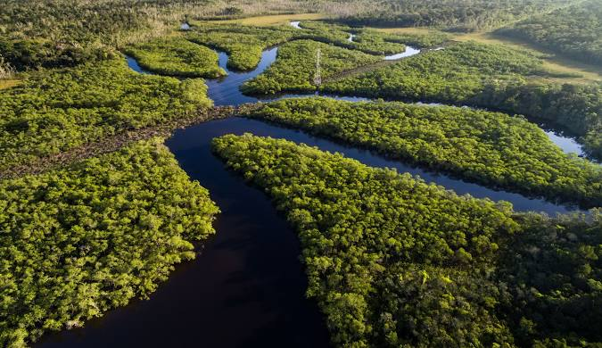

Amazonas é um enorme estado no noroeste do Brasil, coberto quase na sua totalidade pela floresta tropical da Amazónia. A capital, Manaus, é um porto fluvial com pontos de referência que datam do ciclo da borracha de finais do século XIX, incluindo o Teatro Amazonas, uma grande casa de ópera. A cidade marca o "Encontro das Águas", onde o rio Negro, de água negra, e o rio Solimões se juntam para formar o rio Amazonas.
